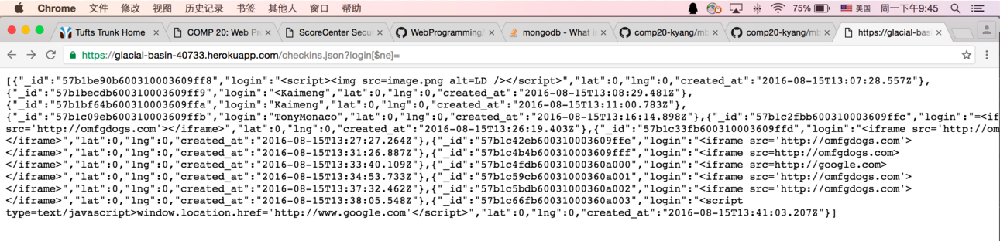

By Kaimeng Yang, 08/15/2016
This assignment tests the security of a potentially vulnerable web application. This application accepts client's geo-locations as check-in info, and keeps a record of login info and locations. My responsibility is to find vulnerabilities that can be exploited in the system.
Testing was first carried out in a "black-box" setting, in an attempt to identify any vulnerabilities without reading the source code. Then I looked at the code, and deployed to my account at Heroku, @Heroku, to furthur examined it. Curl was used to perform one major attack; no other tools such as webs security scanning softwares were used.
The assessment has shown that there are several major issues, including leak of the entire database, automatic direction to other websites, and acceptance of scripted or meaningless user input. The first problem was caused by a simple manipulation to the query string, and the second and third problems were detected while performing XSS attacks.
MongoDB Find Search
[$ne]= was included after /checkins.json, it is possible to gain easy access to all clients' login info.

if (request.query.username) {
collection.find( { 'username' : sanitize(request.query.username) });
//Use data...
}
Cross-Site Scripting
"curl --data "login=<$script$ type="text/javascript">window.location.href='http://www.google.com'" https://glacial-basin-40733.herokuapp.com/sendLocation".
No Input Verification
The above issues represented major flaws that need to be fixed. As recommended above, the first step towards a safer server is to sanitize all inputs and database queries. Additional validation procedure should also be considered if inital verification fails or is indequate.